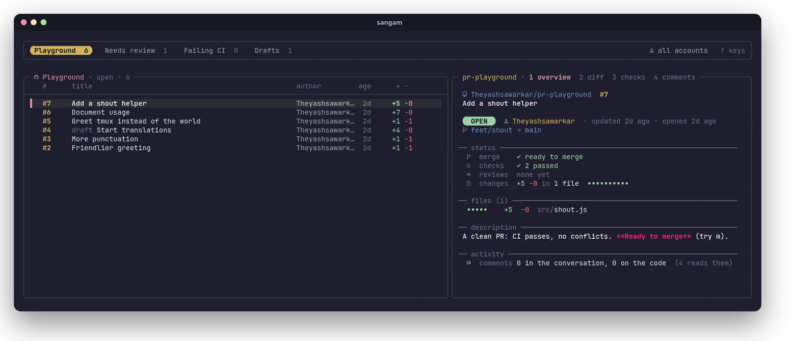
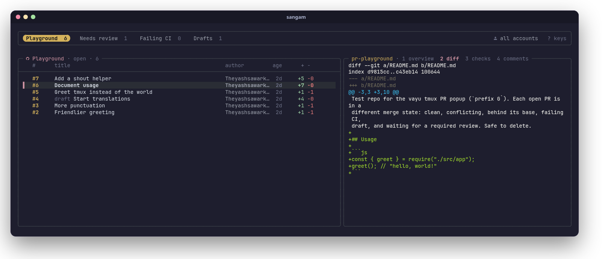
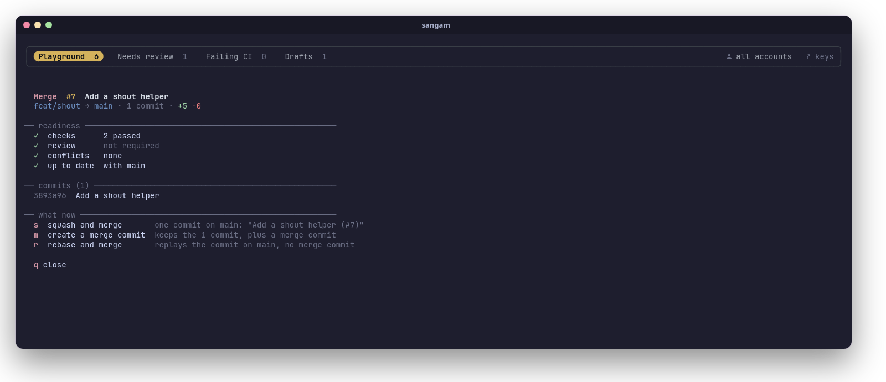

Sangam (संगम) is Sanskrit for a confluence: the place where two rivers meet and flow on as one. Which is what a merge is.
sangam is a terminal UI for the part of the day spent on pull requests: finding the ones waiting for you, reading them, reviewing them and merging them. It runs like lazygit: type sangam in any terminal. It's built on the GitHub CLI (gh), fzf and tmux, so it uses your existing gh sign-in and needs no token, server or config to start.
#Features
See everything that needs you
- Sections, like saved searches. Each section is a GitHub search across all your repos: "review requested", "my PRs", one repo, a whole org, a label. Switch with
h/l; each tab shows its count. - Several GitHub accounts at once. Run each section as a different
ghaccount, so work and personal PRs sit side by side. Pressuto focus on one account. - The repo you're in comes first. Start sangam inside a clone and a tab for that repo is added automatically.
- Open, merged, closed or all.
fcycles the state for every section;snarrows a section with any GitHub search (author:,label:,head:, words...).
Read a PR properly
- Overview: state, author, branches, merge readiness, checks, reviews, size, labels, assignees, changed files and the description, laid out in one screen.
- Diff with syntax highlighting (via bat), checks with durations, and comments: the conversation plus review comments on the code, grouped by file and line.
- Failed CI logs, cleaned up.
Enteron the checks view opens the failed jobs' logs with timestamps stripped and errors highlighted.
Act on it
- A merge panel that knows what the PR needs. It shows readiness (checks, review, conflicts, up to date, draft) and the commits that will land, then offers only what makes sense now: the merge methods the repo allows, update branch, auto-merge, an admin merge, mark ready, or check out to resolve conflicts.
- Approve, request changes, comment (in your
$EDITOR), close or reopen, toggle draft, check out the branch, copy the link, open it in the browser.
Fast and out of your way
- Cached lists show instantly and refresh in the background; the first PRs of a section are prefetched, so moving through them is instant.
- Vim-style keys,
?for a key sheet,qto quit. - Works in any terminal. Inside tmux it can also be a popup on a key (details).
#Install
#Requirements
sangam is a Bash script. It runs on Linux (macOS isn't supported yet: it uses GNU tools, see the roadmap).
| Tool | Version | What for |
|---|---|---|
| bash | 4.4+ | sangam itself |
| gh (GitHub CLI) | 2.40+ | everything GitHub: sign-in, search, PR data, merging |
| fzf | 0.66+ | the list, preview and key handling |
| tmux | 3.3+ | the layout (sangam runs its own private tmux server; you don't need to use tmux yourself) |
| jq | 1.6+ | reading GitHub's JSON |
| git, less | any | the repo you're in, full-screen views |
| GNU coreutils, GNU grep, util-linux | any | standard on Linux (md5sum, stat, grep -P, setsid) |
Optional, but recommended:
| Tool | What you get |
|---|---|
| bat | syntax-highlighted diffs and Markdown descriptions |
| A Nerd Font in your terminal | the icons (without one they show as boxes) |
notify-send (libnotify) | desktop notifications after merges, reviews and comments |
wl-copy (Wayland), xclip (X11) | y copies a PR's link to the clipboard |
Install them with your package manager:
# Arch Linux
sudo pacman -S --needed github-cli fzf tmux jq git bat libnotify wl-clipboard
# Fedora
sudo dnf install gh fzf tmux jq git bat libnotify wl-clipboard
# Debian / Ubuntu (gh from GitHub's apt repo: https://github.com/cli/cli/blob/trunk/docs/install_linux.md)
sudo apt install gh tmux jq git bat libnotify-bin wl-clipboardfzf version: Debian and Ubuntu ship an fzf older than 0.66. Install a current one from fzf's releases (a single binary: put it in
~/.local/bin) or withgit clone --depth 1 https://github.com/junegunn/fzf ~/.fzf && ~/.fzf/install. On Debian/Ubuntu, bat's command isbatcat; link it:ln -s /usr/bin/batcat ~/.local/bin/bat.
sangam doctor checks all of this for you.
#Quick install
curl -fsSL https://raw.githubusercontent.com/Theyashsawarkar/sangam/main/install.sh | bashThis clones sangam into ~/.local/share/sangam, links ~/.local/bin/sangam to it, and runs sangam doctor. No root needed. If ~/.local/bin isn't on your PATH, the installer tells you the line to add.
Installer options (pass them after bash -s --):
curl -fsSL https://raw.githubusercontent.com/Theyashsawarkar/sangam/main/install.sh | bash -s -- --ref v2.0.0 # a specific release
curl -fsSL https://raw.githubusercontent.com/Theyashsawarkar/sangam/main/install.sh | bash -s -- --bin-dir ~/bin| Option | Default | |
|---|---|---|
--ref <tag or branch> | main | install a release (e.g. v2.0.0) instead of the latest code |
--bin-dir <dir> | ~/.local/bin | where the sangam link goes |
--dir <dir> | ~/.local/share/sangam | where sangam is cloned |
--uninstall | remove the link and the clone |
#Other ways to install
Arch Linux (package): a PKGBUILD that builds from the latest commit lives in packaging/arch. It pulls in every dependency and installs to /usr:
git clone https://github.com/Theyashsawarkar/sangam
cd sangam/packaging/arch
makepkg -siSystem-wide with make:
git clone https://github.com/Theyashsawarkar/sangam
cd sangam
sudo make install # /usr/local/bin/sangam
make install PREFIX=~/.local # or just for youmake uninstall (with the same PREFIX) removes it again.
By hand: sangam is one script. Clone the repo anywhere and link bin/sangam into your PATH:
git clone https://github.com/Theyashsawarkar/sangam ~/src/sangam
ln -s ~/src/sangam/bin/sangam ~/.local/bin/sangamAs a tmux plugin: see Using it inside tmux.
#Update and uninstall
| Installed with | Update | Uninstall |
|---|---|---|
| the quick installer | run the install command again | … install.sh | bash -s -- --uninstall |
| the Arch PKGBUILD | makepkg -si again in packaging/arch (after git pull) | sudo pacman -R sangam-git |
make install | git pull && sudo make install | sudo make uninstall |
| TPM (tmux) | prefix U | remove the @plugin line, then prefix alt-u |
Uninstalling leaves your sections (~/.config/sangam) and cache (~/.cache/sangam); delete them by hand if you want them gone.
#Getting started
- Sign in to GitHub with gh (once):
``sh gh auth login ``
To use several accounts (say, work and personal), run gh auth login once per account. sangam uses all of them.
- Check the setup:
``sh sangam doctor ``
``` sangam 2.0.0
required ✓ bash 5.3.20(1)-release ✓ tmux 3.8 ✓ gh 2.102.0 ✓ fzf 0.74.5 ✓ jq 1.8.2 ✓ git 2.56.0 ✓ less 710 ✓ GNU tools coreutils, grep -P, setsid
GitHub ✓ signed in work-account, personal-account
optional ✓ bat highlighted diffs and descriptions ✓ notify-send desktop notifications ✓ clipboard wl-copy ! Nerd Font icons need a Nerd Font in your terminal (can't be checked from here)
✓ ready: run sangam ```
- Run it, ideally from inside a repo you work on:
``sh cd ~/code/my-project sangam ``
You start in normal mode: j/k move through PRs, h/l switch sections, 1–4 switch what the right side shows, m merges, ? shows every key, q quits.
On first run sangam creates ~/.config/sangam/sections with three sections: Review requested, My PRs and Involved. Make it yours next: see Sections.
#Using sangam
#The screen
╭───────────────────────────────────────────────────────────────────────────────╮
│ Review requested 3 My PRs 5 my-project (here) 2 all accounts ? keys │ ← section tabs
╰───────────────────────────────────────────────────────────────────────────────╯
╭─ Review requested · open · 3 ─────────╮╭─ repo · 1 overview 2 diff 3 checks ──╮
│ # title author age ││ │
│ ▌#128 Add rate limiting alice 2h ││ the selected PR, in the view │
│ #127 Fix login redirect bob 1d ││ you picked │
╰───────────────────────────────────────╯╰──────────────────────────────────────╯
the PRs of the current section overview · diff · checks · comments- Top: the sections as tabs, with their PR counts (
·while loading). The current one is highlighted. On the right: the account you're focused on (u) and any GitHub search (s). Long section names shrink to their first word when the tabs don't fit. - Left: the PRs of the current section, newest activity first: number, title (with a
drafttag), author, age of the last update and the size (+added −deleted). In the "all" state, merged and closed PRs are tagged too. - Right: the selected PR, in one of four views:
1overview,2diff,3checks,4comments (Tabcycles them).J/KandCtrl+d/Ctrl+uscroll it;Enteropens it full screen.
#Sections
A section is a name, an optional account, and a GitHub search. They live in ~/.config/sangam/sections, one per line:
# name | account | GitHub search
Review requested | | review-requested:@me
My PRs | | author:@me
Involved | | involves:@me -author:@me
Work: backend | work-login | repo:acme/api repo:acme/worker
Dependabot | | author:app/dependabot org:acme- name: the tab's label.
- account: a
ghaccount (asgh auth statuslists it), or empty for gh's active account. See Accounts. - search: anything GitHub's search takes. sangam adds
is:pr, the state (open/merged/closed) and newest first, so leave those out. Severalrepo:filters in one search mean any of these repos. - Lines starting with
#are comments.
Useful searches:
| You want | Search |
|---|---|
| Waiting for your review | review-requested:@me |
| Waiting for your team's review | team-review-requested:acme/backend |
| Yours | author:@me |
| You're mentioned, assigned or commented | involves:@me |
| One repo / several | repo:acme/api · repo:acme/api repo:acme/web |
| A whole org | org:acme |
| A label | org:acme label:bug |
| Failing CI | author:@me status:failure |
| Approved, ready to go | author:@me review:approved |
| Drafts | author:@me draft:true |
| Bots | org:acme author:app/dependabot |
| Busy discussions | involves:@me comments:>10 |
Managing sections from inside sangam: press S for a menu to add a section (name, account picked from your signed-in ones, search), edit or delete the current one, move it left or right, or pin the repo you're in as a permanent section. E opens the file in your editor instead. Either way, sangam reloads right after.
The "here" tab: started inside a clone of a GitHub repo, sangam adds a "repo (here)" section for it (unless a section already searches exactly that repo), run as the folder's account (git config github.user, see below). sangam remembers the section you were on last.
How many PRs: each section shows up to 50 PRs, newest activity first. Narrow it with s or a more specific search to reach older ones.
#Accounts
sangam works with every account gh is signed in to (gh auth status):
- A section with an account runs its search as that account. A section without one runs as gh's active account, so it follows
gh auth switch. ufocuses on one account: it cycles all accounts → each account → all. Focused on one, you see its sections plus the account-less ones run as it. The choice is remembered across runs (as long as that account is still signed in), and shown at the top right.- Every action (review, merge, comment...) runs as the account of the section you're in.
- The "here" tab uses
git config github.userof the folder you started in. If you keep work and personal code in different folders, set it per folder with git'sincludeIf:
``ini # ~/.gitconfig [includeIf "gitdir:~/work/"] path = ~/.config/git/work.gitconfig # contains: [github] user = work-login ``
#Finding PRs
/filters the list as you type, fuzzy, over what's on screen (number, title, author).EnterorEscgoes back to normal mode.ssearches GitHub within the current section: anything GitHub search takes, such asauthor:alice,label:bug,head:feature/xor words from the title. It's added to the section's own search and shown at the top right. An empty search clears it. It lasts until you quit.fcycles the state for every section: open → merged → closed → all.Fjumps between open and all.Rreloads everything from GitHub (sangam also refreshes on its own whenever you open it or change section, state, account or search).
#Reading a PR

1Overview: repo, number and title; a state badge (open, draft, merged, closed), author, how long ago it was opened and updated, andbranch → base(fork PRs say so). Then status: whether it can merge and why not (needs review, changes requested, behind, conflicts...), checks passed/failed/running, reviews (who approved, who requested changes, who's still requested), size with a change bar, labels and assignees. Then the files with their +/− (long paths shortened in the middle), the description rendered as Markdown, and a count of comments.2Diff: the whole diff, highlighted by bat.3Checks: every check run, failed first, with its workflow and duration.Enterhere opens the failed jobs' logs: grouped by job and step, timestamps removed, error lines in red.4Comments: the conversation (comments and reviews with a body, oldest first) and the review comments on the code, grouped by file and line, replies marked.Enteropens the current view full screen inless(qreturns).bopens the PR in your browser;ycopies its link.
#Reviewing
| Key | What happens |
|---|---|
a | Approve, with an optional one-line message (Enter approves, Ctrl+c cancels) |
r | Request changes: your $EDITOR opens; write the review above the marker line and save. Leave it empty to cancel. |
c | Comment on the PR, in your editor the same way |
x | Close the PR without merging (asks first, optional closing comment); on a closed PR, reopen it |
d | Toggle between draft and ready for review |
o | Check out the PR's branch (gh pr checkout): only inside a clone of the PR's repo, asks first |
After each action the PR is re-read from GitHub, and you get a desktop notification if notify-send is installed.
#Merging

m opens the merge panel for the selected PR. It reads the PR and the repo's merge settings fresh, then shows:
- Readiness: checks, review, conflicts, whether the branch is up to date with its base (and whether the repo requires that), and draft.
- The commits that will land.
- What you can do now, and only that:
| Key | Shown when | Does |
|---|---|---|
s | it's ready and the repo allows squash | squash and merge; you can edit the commit title (prefilled Title (#123)) |
m | it's ready and the repo allows merge commits | create a merge commit |
r | it's ready and the repo allows rebase | rebase and merge |
u | the base moved on and the repo requires up-to-date branches | update the branch (merges the base in; checks run again) |
a | it's blocked (checks or review pending) and the repo allows auto-merge | enable auto-merge: GitHub squash-merges it once everything passes |
! | it's blocked and you're a repo admin | merge anyway as admin, bypassing branch protection |
d | it's a draft | mark it ready for review |
o | it has conflicts and you're in its clone | check out the branch to resolve them (outside its clone, sangam shows the gh command instead) |
q / Esc | always | close the panel |
Before merging, sangam asks whether to delete the branch on GitHub afterwards (unless the repo already does that, or the PR comes from a fork), then confirms once: Enter merges, Esc cancels. Your local checkout is never touched. The panel re-reads the PR after each step, so "update branch → enable auto-merge" works in one sitting.
#Keys
sangam opens in normal mode: letters are commands. / switches to typing a filter; Enter or Esc switches back.
Move and find
| Key | Action |
|---|---|
j / k | next / previous PR |
g / G | first / last PR |
h / l | previous / next section |
/ | filter the list |
s | search GitHub within the section |
f | cycle open / merged / closed / all |
F | toggle open ↔ all |
u | switch account |
R | reload from GitHub |
S | add / edit / delete / move sections, pin this repo |
E | edit the sections file |
Read
| Key | Action |
|---|---|
1 2 3 4 | overview / diff / checks / comments |
Tab | next view |
J / K | scroll the preview down / up |
Ctrl+d / Ctrl+u | scroll half a page |
Enter | current view full screen (failed logs in checks) |
b | open in the browser |
y | copy the link |
Act
| Key | Action |
|---|---|
m | merge panel |
a | approve |
r | request changes |
c | comment |
x | close / reopen |
o | check out the branch (in its clone) |
d | draft ↔ ready for review |
? | show every key |
q / Esc | quit |
The merge panel's own keys are listed under Merging.
#Command line
sangam open it in this folder (any terminal, in tmux or not)
sangam -C <dir> open it as if started in <dir>
sangam doctor check the dependencies and the GitHub sign-in
sangam --version print the version
sangam --help show the helpsangam doctor exits non-zero when something required is missing, so it also works in scripts.
#Using it inside tmux
sangam doesn't need tmux to be your terminal setup: it runs its own private tmux server for its layout, with its own socket and none of your tmux config. Run it in a tmux pane like any other program.
If you do use tmux, sangam can also be a popup on a key: prefix G opens it over whatever you're doing, in the current pane's folder, and prefix G again closes it.
With TPM: add this to your tmux config, above TPM's run line, then press prefix I:
set -g @plugin 'Theyashsawarkar/sangam'TPM keeps its own copy in ~/.tmux/plugins/sangam; you don't need the sangam command installed separately for the popup.
Without TPM: with sangam cloned somewhere, add:
run-shell ~/path/to/sangam/sangam.tmuxOptions (set them before TPM's run line):
| Option | Default | |
|---|---|---|
@sangam-key | G | key after the prefix that opens the popup (and closes it from inside); none binds nothing |
@sangam-width | 90% | popup width |
@sangam-height | 88% | popup height |
@sangam-title | sangam | popup title |
@sangam-launcher | your own popup command instead of display-popup. It's run with display-popup's arguments appended (-E -d DIR -T TITLE CMD), tmux formats expanded |
For example, P instead of G, and a popup helper of your own:
set -g @sangam-key 'P'
set -g @sangam-launcher "~/.tmux/scripts/popup.sh '#{client_name}'"#Files and environment
| Path | What |
|---|---|
~/.config/sangam/sections | your sections (format) |
~/.cache/sangam/ | cached lists and PR details (safe to delete), the last section and account |
$XDG_RUNTIME_DIR/sangam.XXXXXX/ | one run's state and its private tmux socket, removed on quit |
sangam respects XDG_CONFIG_HOME and XDG_CACHE_HOME. Other variables:
| Variable | Used for |
|---|---|
VISUAL, EDITOR | writing reviews and comments, editing the sections file (default vi) |
BAT_THEME | the colors of diffs and descriptions (any bat --list-themes theme) |
GH_CONFIG_DIR, GH_TOKEN | passed through to gh as usual (sections with an account use that account's token) |
Upgrading from tmux-gh-pr (sangam's earlier name): your ~/.config/gh-pr/sections is copied to ~/.config/sangam/sections the first time sangam runs. In tmux, replace Theyashsawarkar/tmux-gh-pr with Theyashsawarkar/sangam and rename any @gh-pr-* options to @sangam-*.
#How it works
sangam is a single Bash script that calls itself for each part of the screen:
- On start it builds the sections (your file, the "here" repo, the account focus), then starts a private tmux server with one session: a 3-line pane for the tabs and a pane running fzf for the list. fzf draws the preview by calling
sangam --preview <repo#number>, and its key bindings call back into sangam for every action. That split is what lets the tabs span both the list and the preview. - Each section is one GraphQL search (
gh api graphql) that brings the list with CI and review state in a single request. All sections are fetched in parallel in the background at start, so tab counts fill in and switching sections is instant. - PR details (
gh pr view), diffs and review comments are cached per PR in~/.cache/sangamand prefetched for the first PRs of a section. Cached data shows first; fresh data replaces it as it arrives. - Actions are plain
ghcommands (gh pr merge,gh pr review,gh api ...), run with the section's account token (gh auth token --user). sangam never stores a token itself. - Quitting fzf kills the private tmux server and removes the run's state.
#Troubleshooting
"gh isn't signed in to github.com" Run gh auth login. sangam only talks to github.com (not GitHub Enterprise Server yet).
Icons show as boxes or question marks Your terminal's font isn't a Nerd Font. Install one (e.g. JetBrainsMono Nerd Font) and select it in your terminal's settings.
Colors look washed out or wrong Your terminal needs truecolor (24-bit) support, which every modern terminal has. If it's set up but not advertised, export COLORTERM=truecolor in your shell's rc file.
sangam doctor says fzf is too old Your distribution's fzf predates 0.66 (common on Debian and Ubuntu). See Requirements for getting a current one.
A section always shows 0 Try its search on github.com (pull requests tab) or with gh search prs "<search>". If it finds PRs there, check the section's account: it needs access to those repos (private repos, org SSO). For an org with SAML SSO, authorize gh's token for it in your GitHub settings (Settings → Applications → Authorized OAuth Apps → GitHub CLI → Grant).
o (checkout) says it only works inside a clone Checkout switches the branch of the folder sangam was started in, so start sangam inside a clone of that PR's repo (or use sangam -C <clone>).
The diff or description has no colors Install bat. On Debian/Ubuntu it's called batcat; link it as bat (see Requirements).
The tmux popup opens but prefix G doesn't close it Close it with q. The popup uses your tmux prefix at the time it opened; if you changed your prefix since, reopen it. If you changed the key, set @sangam-key before TPM's run line, then reload tmux.
Something else Run sangam doctor, then open an issue with its output and what you did.
#Contributing
Bug reports, ideas and pull requests are welcome. Before a PR:
make check # shellcheck + syntax + CLI smoke test (what CI runs)Test changes by hand too: run bin/sangam from your clone. For the tmux popup, use a throwaway tmux server so your real one isn't touched:
tmux -L test -f /dev/null new -s t
tmux -L test run-shell "$PWD/sangam.tmux" # then prefix (Ctrl+b) GTheyashsawarkar/pr-playground is a public repo with one open PR per merge situation (clean, conflicting, behind its base, failing CI, draft, waiting for a review), handy for trying the merge panel. Every change gets an entry in CHANGELOG.md. More notes for contributors (and AI coding agents) are in CLAUDE.md.
#Roadmap
- macOS support (BSD
stat/mktemp/grep, nosetsid) - AUR package and Homebrew formula
- GitHub Enterprise Server hosts
- Configurable colors (it uses a Catppuccin-like palette today)
#License
MIT. sangam is part of Vayu, a keyboard-driven Arch Linux desktop, and works anywhere on its own. Built on the shoulders of gh, fzf, tmux, jq and bat.